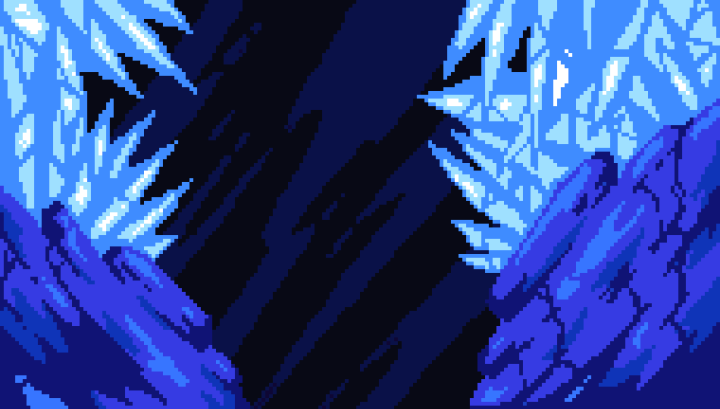

Bonjour et bonne année à tous de la part de toute l'équipe de Spelunca ! Je m'appelle Nathan et je suis le chef de projet de Spelunca. Cette nouvelle année est marquée par la reprise des newsletters. Nous avons fait quelques changements durant ces 3 dernières semaines et nous allons vous les présenter dans cette newsletter. N'hésitez pas à lire les précédentes newsletters afin de comprendre l'évolution du projet au cours du temps.
Nous sommes heureux de vous annoncer que nous avons désormais 3 musiques différentes pour notre jeu. Elles ont été crées par Gabin VITOUX qui a accepté de nous fournir son aide pour créer l'ambiance musical de Spelunca.
Les musiques ne sont pas encore implémentées en jeu, mais cela ne saurait tarder étant donné que nous avions préparé leurs implémentations lors de l'ajout du menu des options.
Nous avons développé un système permettant d'ajouter facilement de nouvelles langues dans notre projet. Nous prévoyons à minima d'ajouter l'Anglais, le Français. Cependant, si nous avons le temps, nous ajouterons l'Espagnol et peut-être... le Breton. Nous n'avons cependant pas encore ajouté la possibilité de changer la langue dans les options. Cela viendra aussi dans les prochaines semaines.
Nous avons reçu l'aide d'Abel Graux qui a créé un nouvel arrière-plan pour le menu principal du jeu. Celui-ci sera rapidement implémenté dans le jeu pour remplacer l'actuel.
Nous avons aussi fait diverses améliorations. Nous avons modifié l'organisation des fichiers du projet. Nous avons voulu implémenter un nouveau système pour les déplacements du joueur. Cependant, celui-ci ne pouvait être mis en place dans le cadre de notre projet, car il ne permettait pas de gérer facilement les transitions entre les différents états de déplacements du joueur.
Le planning a été mis à jour et est disponible sur notre serveur Discord. Il est possible qu'il soit modifié dans les prochains jours.
N'hésitez pas à suivre et à partager notre Projet. Vous pouvez venir nous soutenir et poser vos questions sur notre serveur Discord.
Merci d'avoir lu cette huitième newsletter. La prochaine newsletter sera publiée le 17/01/2022 ou le 24/01/2022.
Team Spelunca.
Rédaction : Nathan DELORME